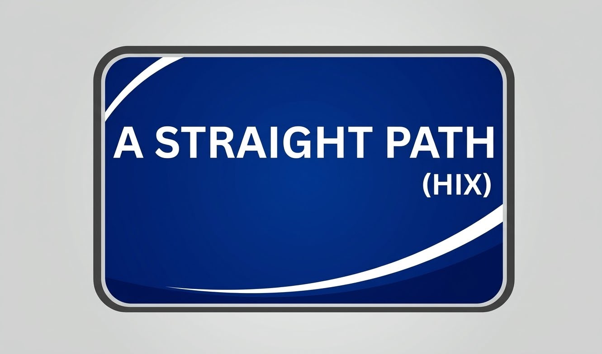
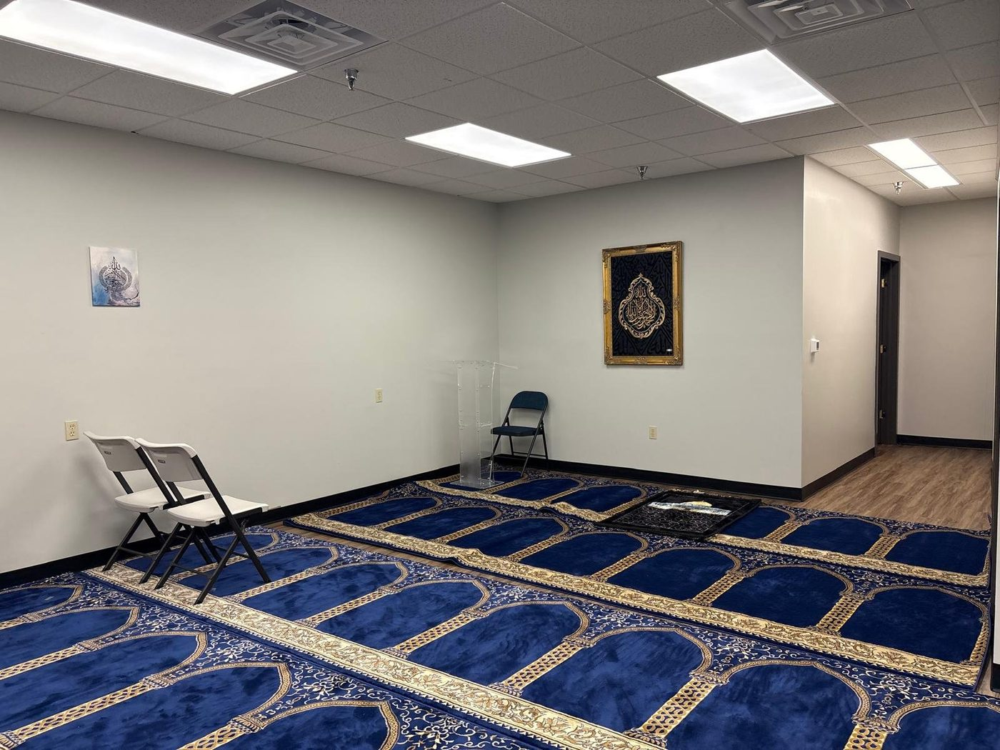
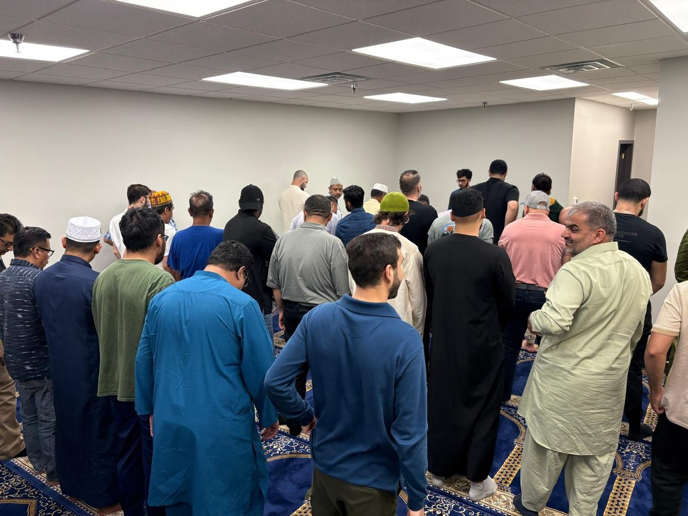
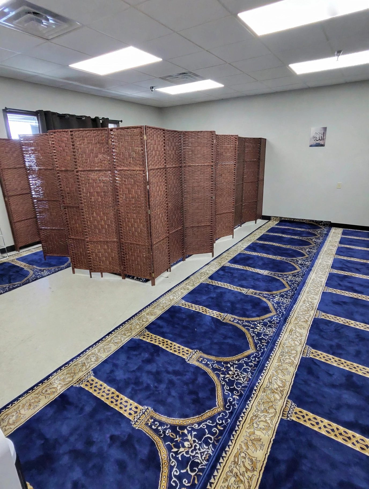
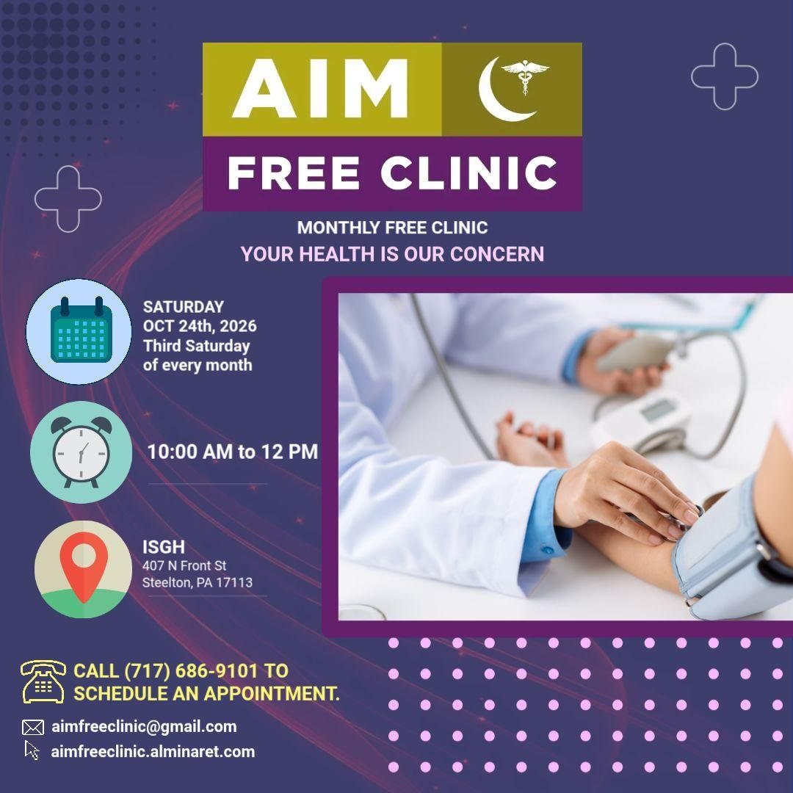
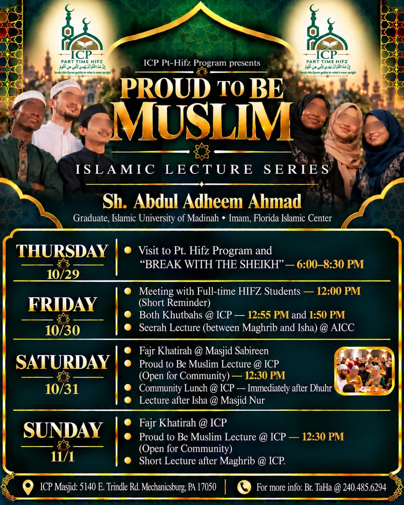
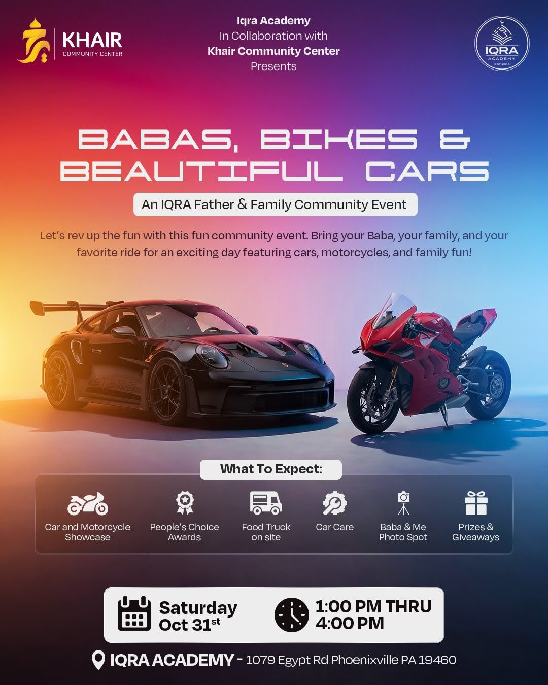
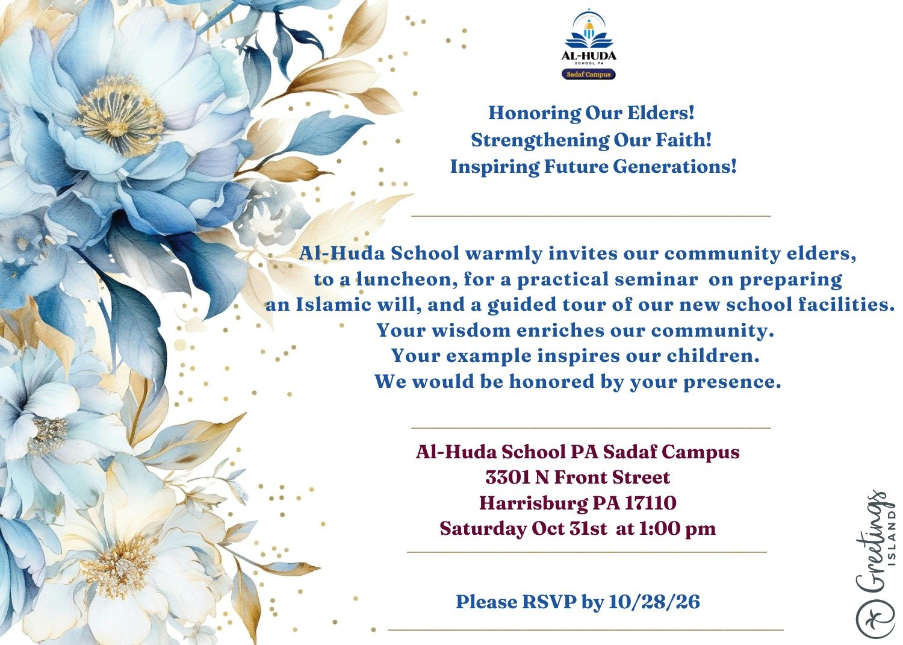
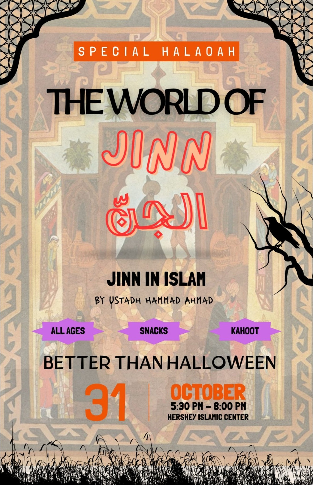

Plan Your Visit — Finding the Musallah
The musallah is inside an office building, so it helps to know what to look for:
1 · Find the building
4813 Jonestown Rd, Harrisburg — the sign outside the building says “CHC.”
2 · Find Suite #105
Our door carries a blue sign: “A Straight Path (HIX)” — pictured here. That is the musallah entrance.
3 · Access
For musallah access instructions before your first visit, email HarrisburgIslamicCenter@gmail.com, or text / call one of the community admins.

The door sign at Suite #105 — look for this blue “A Straight Path (HIX)” sign.
See the Musallah
A look inside, so you know the space before you arrive:



About the Center
The Harrisburg Islamic Center — A Straight Path (HIX) — serves Muslims in Lower Paxton Township and the greater Harrisburg area of Central Pennsylvania. It is a place for the five daily prayers and the Friday Jumu'ah prayer, and a gathering point for the community through Ramadan, the two Eids, and the year round.
Visitors are welcome. If you are new to the area, new to Islam, or simply curious, please come by or reach us by email — we are glad to meet you.
Announcements
Redirect Your PA Taxes to Al-Huda School — EITC Program (Fall 2026)
Assalamu alaikum wa rahmatullah,
Through Pennsylvania's Educational Improvement Tax Credit (EITC) program, you can redirect part of the PA state tax you already owe to scholarships at Al-Huda School PA, through the Central Pennsylvania Scholarship Fund (CPSF). Al-Huda School receives the full amount you designate — you effectively donate about 6.3%, and the Commonwealth of PA provides the other 93.7% on your behalf.
The minimum designation is $3,500 of PA state tax liability (roughly $100,000 combined household income), and you may designate a different amount. Business owners, S-Corp / C-Corp / LLC shareholders, partners, the self-employed, and W-2 employees can all participate.
Watch: How the EITC program works — presented for Al-Huda School PA (about 4½ minutes).
How to apply — step by step:
- Fill out the Fall 2026 Joinder Agreement and email it to tami@cpsfcharity.org. On the form, you may name Al-Huda School PA in the optional school designation section.
- You will receive a confirmation email from the Central Pennsylvania Scholarship Fund (CPSF).
- CPSF will ask for a check for your designated amount, to be sent in November or at the beginning of December 2026.
- Write the check exactly as CPSF instructs — and on the memo line, make sure to write: "EITC fund for Al-Huda PA."
- In February 2027, you will receive a K-1 form for your contribution.
- File the K-1 form with your tax return through your accountant so you can claim the credit for your contribution.
- That's all — EITC is simply the PA state tax you already pay to the Commonwealth of Pennsylvania, redirected to benefit our children's education.
Questions? Contact Brother Shah at (717) 614-3049, or Tami Clark, Executive Director of CPSF, at (814) 682-9035 / tami@cpsfcharity.org.
Download the Fall 2026 Joinder Agreement (PDF)
Jazakum'Allahu khairan.
Our website is live
Prayer and Jumu'ah times are posted above and will be updated here whenever they change. Questions: HarrisburgIslamicCenter@gmail.com.
Ramadan & Eid
Taraweeh, iftar, and Eid prayer details will be announced here in season.
Have an announcement for the community? Submit it for review — approved announcements are posted here.
Events
Gatherings at the Center and events from our wider community — shared so families don't miss out.
AIM Free Clinic — Monthly Free Clinic
Hosted at ISGH (Islamic Society of Greater Harrisburg), Steelton
Your health is our concern. A free health clinic open to the community — held every month. This month's clinic is Saturday, October 24.
- Free clinic — no charge
- Held monthly (the organizers list it on the third Saturday of each month)
- Questions: aimfreeclinic@gmail.com
Call (717) 686-9101 to schedule
Shared for our community — this clinic is hosted at ISGH in Steelton, not by Harrisburg Islamic Center.

Proud to Be Muslim — Islamic Lecture Series
ICP Pt-Hifz Program presents Sh. Abdul Adheem Ahmad — graduate of the Islamic University of Madinah; Imam, Florida Islamic Center
A four-day lecture series open to the community, with sessions at ICP and neighboring masjids:
- Thu Oct 29: Pt. Hifz Program visit & “Break with the Sheikh” — 6:00–8:30 PM
- Fri Oct 30: Full-time Hifz students — 12:00 PM · Both Khutbahs at ICP — 12:55 & 1:50 PM · Seerah Lecture at AICC (between Maghrib and Isha)
- Sat Oct 31: Fajr Khatirah at Masjid Sabireen · Community lecture at ICP — 12:30 PM · Community lunch at ICP after Dhuhr · Lecture after Isha at Masjid Nur
- Sun Nov 1: Fajr Khatirah at ICP · Community lecture at ICP — 12:30 PM · Short lecture after Maghrib at ICP
Shared for our community — this lecture series is hosted by ICP in Mechanicsburg, not by Harrisburg Islamic Center.

Babas, Bikes & Beautiful Cars
An IQRA Father & Family Community Event — Iqra Academy, in collaboration with Khair Community Center
Let's rev up the fun! Bring your Baba, your family, and your favorite ride for an afternoon featuring cars, motorcycles, and family fun. No special car or motorcycle needed — everyone is welcome: luxury, classic, custom, sports cars, trucks, and motorcycles.
- Car & Motorcycle Showcase
- People's Choice Awards
- Food Truck on site
- Car Care & "What's Under the Hood?"
- Baba & Me Photo Spot
- Prizes & Giveaways
Rides. Roots. Relationships.
Shared for our community — this event is hosted by Iqra Academy in Phoenixville, not by Harrisburg Islamic Center.

Honoring Our Elders — Luncheon & Islamic Will Seminar
Al-Huda School PA, Sadaf Campus
Al-Huda School warmly invites our community elders to a luncheon, a practical seminar on preparing an Islamic will, and a guided tour of the new school facilities. Your wisdom enriches our community — your example inspires our children.
- Luncheon honoring our community elders
- Practical seminar: preparing an Islamic will
- Guided tour of the new school facilities
- Please RSVP by Wednesday, October 28
Shared for our community — this event is hosted by Al-Huda School PA, not by Harrisburg Islamic Center.

The World of Jinn — Jinn in Islam
A Special Halaqah with Ustadh Hammad Ahmad — Hershey Islamic Center
Talks of ghosts, spirits, and the supernatural are everywhere this time of year — but what does Islam really teach about the unseen world? Instead of trick or treating, treat yourself to a good time in the Masjid: a family-friendly evening for all ages.
- All ages welcome
- Treats & sweets
- Kahoot
Register — helps the head-count
Shared for our community — this event is hosted by Hershey Islamic Center in Hummelstown, not by Harrisburg Islamic Center. The organizers note: this is not a Halloween celebration — it is an evening to redirect our youth to remember and appreciate Islamic beliefs.

Hosting a community event? Send it through the announcement form above — approved events will be posted here.
Support the Center
“The parable of those who spend their substance in the way of Allah is that of a grain of corn: it grows seven ears, and each ear has a hundred grains.” — Qur'an 2:261
Your sadaqah and zakat keep the musallah open — rent, utilities, and maintenance.
Zelle
HARRISBURG ISLAMIC CENTER
Scan with your bank’s app — Zelle ID: astraightpathhix2026
Contact
HarrisburgIslamicCenter@gmail.com
For questions, first-visit access instructions, and community matters.